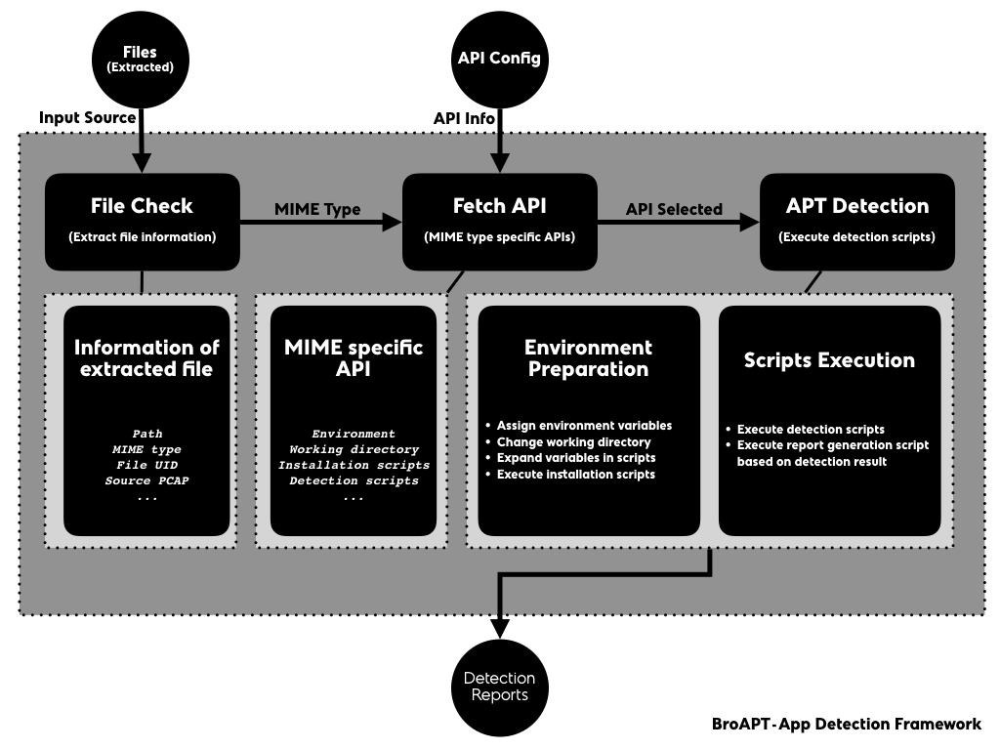
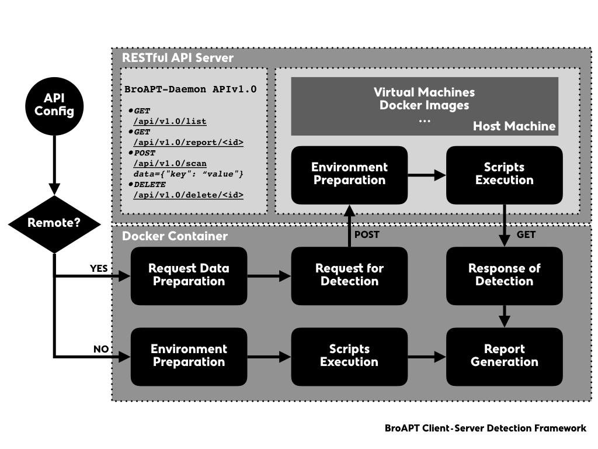

BroAPT-App Detection Framework¶
The BroAPT-App framework processes extracted files, perform malware detection upon those files with detection API configured through the configuration file.
The BroAPT-App framework fetches basic information about the extracted file, including file path, MIME type, file UID, source PCAP file, etc.
Each file extracted, since it will be named after:
PROTOCOL-FUID-MIMETYPE.EXT
with such pattern, the BroAPT-App framework will generate an
Entryto represent the information of the target file, e.g. for a extracted file named:application/vnd.openxmlformats-officedocument/HTTP-F3Df5B3z9UI3yi5J03.application.msword.docx
the BroAPT-App framework will generate the
Entryobject as following:Entry( path='application/vnd.openxmlformats-officedocument/HTTP-F3Df5B3z9UI3yi5J03.application.msword.docx', uuid='F3Df5B3z9UI3yi5J03', mime=MIME( media_type='application', subtype='msword', name='application/msword' ) )
Based on the MIME type, the BroAPT-App framework will obtain MIME specific detection API for the extracted file.
The BroAPT-App framework will then start detecting the extracted file based on the specification described in the API.
When detection, as the Docker container may not be capable of such action, the BroAPT-App framework may request the BroAPT-Daemon server to remote detect the extracted file.
The BroAPT-Daemon server is a RESTful API server implemented using Flask microframework. At the moment it supports following APIs:
URI Routing
HTTP Method
Description
/api/v1.0/listGETQuery detection listing
/api/v1.0/report/<id>GETQuery detection report
/api/v1.0/scan data={"key": "value"}POSTRequest remote detection
/api/v1.0/delete/<id>DELETEDelete detection record
MIME Specific API Configuration¶
In the BroAPT-App framework, we used an API configuration file to provide the BroAPT system with MIME specific detection mechanism. The configuration file is written in YAML, inspired by Docker Compose and Travis CI.
The directory structure of API configuration file and its related files are as below:
/api/
│ # API configuration file
├── api.yml
│ # MIME: application/*
├── application/
│ └── ...
│ # MIME: audio/*
├── audio/
│ └── ...
│ # default API
├── example/
│ └── ...
│ # MIME: font/*
├── font/
│ └── ...
│ # MIME: image/*
├── image/
│ └── ...
│ # MIME: message/*
├── message/
│ └── ...
│ # MIME: model/*
├── model/
│ └── ...
│ # MIME: multipart/*
├── multipart/
│ └── ...
│ # MIME: text/*
├── text/
│ └── ...
│ # MIME: video/*
└── video/
└── ...
The /api/ folder will be mapped into the Docker container at runtime and the
/api/api.yml is the exact API configuration file. The API for example MIME
type is the default fallback detection method for those with NO existing detection
API configured.
In the configuration file, you can specify global environment variables under the
environment key:
environment:
# API root path (from environment vairable)
API_ROOT: ${BROAPT_API_ROOT}
# Python 3.6
PYTHON36: /usr/bin/python3.6
# Python 2.7
PYTHON27: /usr/bin/python
# Shell/Bash
SHELL: /bin/bash
And for a certain MIME, e.g. PDF files (MIME is application/pdf), the configuration
should be as following:
application:
pdf:
remote: false
# default working directory is ``/api/application/pdf/``
# now changed to ``/api/application/pdf/pdf_analysis``
workdir: pdf_analysis
environ:
ENV_FOO: 1
ENV_BAR: cliche
install:
- apt-get update
- apt-get install -y python python-pip
- ${PYTHON27} -m pip install -r requirements.txt
- rm -rf /var/lib/apt/lists/*
- apt-get remove -y --auto-remove python-pip
- apt-get clean
scripts:
- ${PYTHON27} detect.py [...]
- ...
report: ${PYTHON27} report.py
Note
Shell-like globing is now supported for MIME types, you may specify an API
using application/vnd.ms-*, which will be used for both application/vnd.ms-excel
and application/ms-powerpoint.
In the configuration file, the report key is mandatory.
If set remote key as true, the BroAPT-App framework will request the
BroAPT-Daemon server to perform remote detection.
And if an API configuration is shared by multiple MIME types, you should set
shared key as true, so that the API would be process-safe at runtime.
After parsing through the cfgparser.parse() function, the API configuration
above will be represented as:
API(
workdir='pdf_analysis',
environ={
'API_ROOT': '${BROAPT_API_ROOT}',
'PYTHON36': '/usr/bin/python3.6',
'PYTHON27': '/usr/bin/python',
'SHELL': '/bin/bash',
'ENV_FOO': '1',
'ENV_BAR': 'cliche'
},
install=[
'apt-get update',
'apt-get install -y python python-pip',
'${PYTHON27} -m pip install -r requirements.txt',
'rm -rf /var/lib/apt/lists/*',
'apt-get remove -y --auto-remove python-pip',
'apt-get clean'
],
scripts=[
'${PYTHON27} detect.py [...]',
...
],
report='${PYTHON27} report.py',
remote=False,
shared='application/pdf',
inited=<Synchronized wrapper for c_ubyte(0)>,
locked=<Lock(owner=unknown)>
)
API.initedis to mark if the installation process had been run successfully.API.sharedis to mark if the configuration is shared by multiple MIME types.API.lockedis to mark if the process is locked to prevent resource competition.
At runtime, if the BroAPT-App framework is to detect a file at /dump/application/pdf/test.pdf,
the main procedure is as follows:
Set environment variables:
API_ROOT="/api/" PYTHON36="/usr/bin/python3.6" PYTHON27="/usr/bin/python" SHELL="/bin/bash" ENV_FOO=1 ENV_BAR="cliche" BROAPT_PATH="/dump/application/pdf/test.pdf" BROAPT_MIME="application/pdf"
Change the current working directory to
/api/application/pdf/pdf_analysis.If the
API.initedis nowFalse, which means the installation process is NOT yet performed, then acquireAPI.lockedand execute the commands:apt-get update apt-get install -y python python-pip python -m pip install -r requirements.txt rm -rf /var/lib/apt/lists/* apt-get remove -y --auto-remove python-pip apt-get clean
afterwards, toggle
API.initedtoTrueand releaseAPI.locked.Execute detection commands:
/usr/bin/python detect.py [...] ...
Once finished, execute report generation script
/usr/bin/python report.py.
Integrated Detection Services¶
At the moment, the BroAPT system had integrated six detection solusions.
Default Detection powered by VirusTotal¶
VirusTotal aggregates many antivirus products and online scan engines to check for viruses that the user’s own antivirus may have missed, or to verify against any false positives.
As mentioned above, the example MIME type is the default fallback detection
mechanism in case of missing configuration. The configuration is as below:
example:
environ:
## sleep interval
VT_INTERVAL: 30
## max retry for report
VT_RETRY: 10
## percentage of positive threshold
VT_PERCENT: 50
## VT API key
VT_API: ...
## path to VT file scan reports
VT_LOG: /var/log/bro/tmp/
report: ${PYTHON36} virustotal.py
Android APK Detection powered by AndroPyTool¶
AndroPyTool is a tool for extracting static and dynamic features from Android APKs. It combines different well-known Android apps analysis tools such as DroidBox, FlowDroid, Strace, AndroGuard or VirusTotal analysis. Provided a source directory containing APK files, AndroPyTool applies all these tools to perform pre-static, static and dynamic analysis and generates files of features in JSON and CSV formats and also allows to save all the data in a MongoDB database.
AndroPyTool is configured for detection of APK files, whose MIME type is
application/vnd.android.package-archive in IANA registry. The configuration
is as below:
application:
vnd.android.package-archive:
remote: true
workdir: AndroPyTool
environ:
APK_LOG: /home/traffic/log/bro/tmp/
install:
- docker pull alexmyg/andropytool
report: ${SHELL} detect.sh
Since the environment configuration of AndroPyTool is much too complex, we directly used its official Docker image for detection. Therefore, the AndroPyTool is called through remote detection mechanism, i.e. BroApt-Daemon server performs detection using AndroPyTool Docker image on APK files then send the report back to BroAPT-App framework for records.
Office Document Detection powered by MaliciousMacroBot¶
MaliciousMacroBot is to provide a powerful malicious file triage tool for cyber responders; help fill existing detection gaps for malicious office documents, which are still a very prevalent attack vector today; deliver a new avenue for threat intelligence, a way to group similar malicious office documents together to identify phishing campaigns and track use of specific malicious document templates.
MaliciousMacroBot is configured for detecting Office files, which is a document type
based on XML, such as Microsoft Office and OpenOffice. The MIME types of such documents
include application/msword, application/ms-excel, application/vnd.ms-powerpoint
and application/vnd.openxmlformats-officedocument.*, etc. The configuration is as
below:
application:
vnd.openxmlformats-officedocument.*: &officedocument
workdir: ${API_ROOT}/application/vnd.openxmlformats-officedocument/
environ:
MMB_LOG: /var/log/bro/tmp/
install:
- yum install -y git
- git clone https://github.com/egaus/MaliciousMacroBot.git
- ${PYTHON36} -m pip install ./MaliciousMacroBot/
- yum clean -y all
report: ${PYTHON36} MaliciousMacroBot-detect.py
shared: officedocument
msword: *officedocument
vnd.ms-excel: *officedocument
vnd.ms-powerpoint: *officedocument
...
Note
As you may have noticed here, the configured MIME types detected by MaliciousMacroBot
has a * globing syntax, such shall be matched using shell-like globing mechanism.
As the MaliciousMacroBot detection method is shared by multiple MIME types, we
set the shared key in the API to an identifier for the detection method, so
that at runtime, such detection method will be process-safe.
Linux ELF Detection powered by ELF Parser¶
ELF Parser is designed for static ELF analysis. It can quickly determine the capabilities of an ELF binary through static analysis, then discover if the binary is known malware or a possible threat without ever executing the file.
ELF Parser is configured for the ELF file (MIME type: application/x-executable
only. The configuration is as below:
application:
x-executable:
## ELF Parser
remote: true
environ:
ELF_LOG: /home/traffic/log/bro/tmp/
ELF_SCORE: 100
workdir: ELF-Parser
install:
- docker build --tag elfparser:1.4.0 --rm .
report: ${SHELL} detect.sh
Common Linux Malware Detection powered by LMD¶
Linux Malware Detect (LMD) is a malware scanner for Linux, that is designed around the threats faced in shared hosted environments. It uses threat data from network edge intrusion detection systems to extract malware that is actively being used in attacks and generates signatures for detection. In addition, threat data is also derived from user submissions with the LMD checkout feature and from malware community resources. The signatures that LMD uses are MD5 file hashes and HEX pattern matches, they are also easily exported to any number of detection tools such as ClamAV.
LMD is configured for various common file types. The configuration is as below:
application:
octet-stream: &lmd
## LMD
workdir: ${API_ROOT}/application/octet-stream/LMD
environ:
LMD_LOG: /var/log/bro/tmp/
install:
- yum install -y git which
- test -d ./linux-malware-detect/ ||
git clone https://github.com/rfxn/linux-malware-detect.git
- ${SHELL} install.sh
report: ${SHELL} detect.sh
shared: linux-maldet
text:
html: *lmd
x-c: *lmd
x-perl: *lmd
x-php: *lmd
Malicious JavaScript Detection powered by JaSt¶
JaSt is a low-overhead solution that combines the extraction of features from the abstract syntax tree with a random forest classifier to detect malicious JavaScript instances. It is based on a frequency analysis of specific patterns, which are either predictive of benign or of malicious samples. Even though the analysis is entirely static, it yields a high detection accuracy of almost 99.5% and has a low false-negative rate of 0.54%.
JaSt as is dedicated for javaScript files. The configuration is as below:
application:
javascript: &javascript
workdir: ${API_ROOT}/application/javascript/JaSt
environ:
JS_LOG: /var/log/bro/tmp/
install:
- yum install -y epel-release
- yum install -y git nodejs
- test -d ./JaSt/ ||
git clone https://github.com/Aurore54F/JaSt.git
- ${PYTHON3} -m pip install
matplotlib
plotly
numpy
scipy
scikit-learn
pandas
- ${PYTHON3} ./JaSt/clustering/learner.py
--d ./sample/
--l ./lables/
--md ./models/
--mn broapt-jast
scripts:
- ${PYTHON3} ./JaSt/clustering/classifier.py
--f ${BROAPT_PATH}
--m ./models/broapt-jast
report: ${PYTHON3} detect.py
shared: javascript
text:
javascript: *javascript